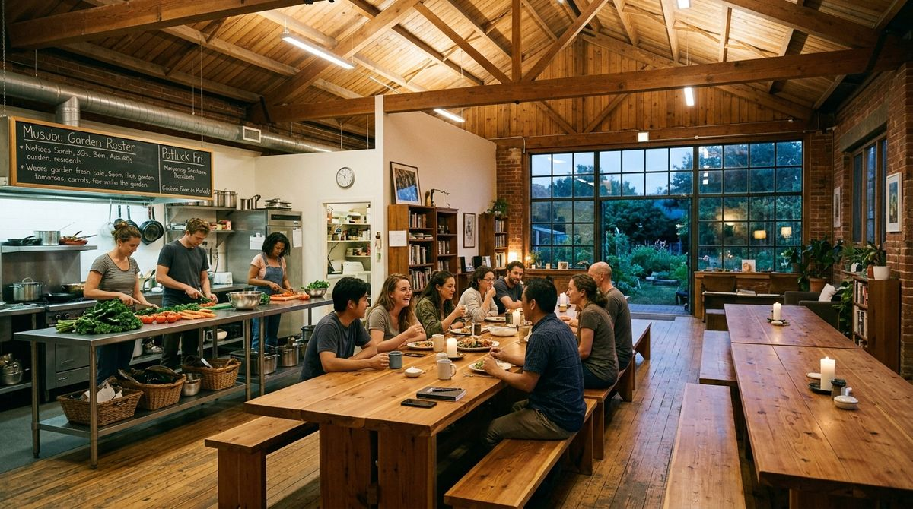
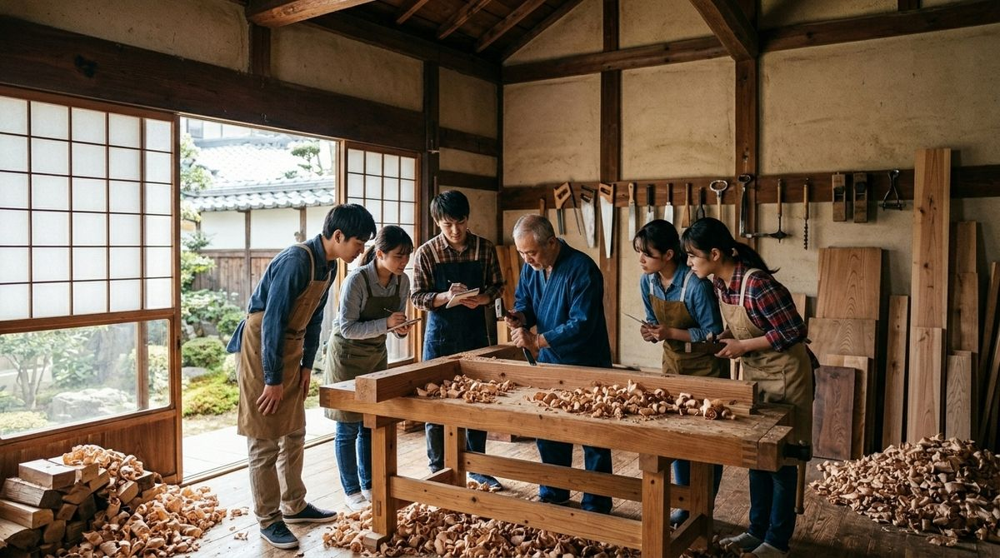
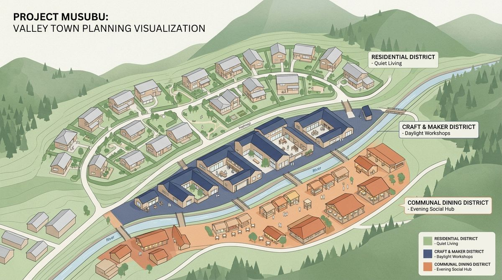

The choice was never Tokyo versus the countryside. It was Tokyo versus a question mark.
Musubu is a concept I have been working on. It borrows a mechanic that already works elsewhere,
conditional pledges, and points it at moving house. This page is the whole of it.
About five minutes. Nothing to sign up for.
What I think is actually happening
Ask people whether they would live somewhere quieter, with more time and a house they could
afford, and a lot of them say yes. Almost nobody goes.
I do not think that is because people prefer cities. I think it is because
Tokyo is the only option with a shape you can picture. There are around 1,700
municipalities and you cannot tell, from outside, which one has work you could do, which one is
quietly emptying, or whether you would be the only new person there for ten years.
A town nobody can evaluate is not an option. It is a guess, and people are right to refuse a
guess.
So what is missing is not persuasion. It is specification. Someone has to be
able to say, in advance, who is coming, what the work pays, when it happens, what the rent is,
and what occurs if it does not fill.
A town, from outside
Who else is goingunknown
Workunclear
Rentno idea
Whenwhenever
If it goes wrongyour problem
The same town, coordinated
Who else is going30 households
Work2 teaching posts
Rent¥38,000
Whenone spring
If it goes wrongdeposit returns
Illustrative figures. Nothing on the right has been agreed with any town.
The concept
This does not exist. No town has agreed to anything, there is no company, and
nobody is being recruited. It is an idea I have been working on for about eighteen months.
A town says what it is short of. Not a brochure. Two teachers. Six people who will learn a building trade. Families with young children, and here is the housing we would hold for them.
People commit conditionally. You say: I will go, if thirty other households go. A deposit is held. Nothing happens yet.
The number is public. You can watch it move, and see roughly who else is in. How many families, what people do, who your neighbours would be.
You meet before you move. Months of it. Visits, meals, questions. The group forms first and the moving happens after.
It fills, or it does not. If it fills, everyone goes in the same season. If it does not, the money goes back and nobody has moved anywhere.
The point is not to convince anyone that the countryside is nice. It is that arriving somewhere
with thirty other households is a completely different thing from arriving alone. Nobody is
already on the inside, and nobody is the only new person.
The last time most adults joined a group where everyone turned up at once and nobody had
seniority was university, or a first job intake, or a dorm. People describe those years as the
most friendship-dense of their lives and usually credit being young. I think the mechanism is
simpler than that. Nobody was already inside.

Illustration, AI-generated, August 2026. Not a real place.
A word that was already there
Japan has its own vocabulary for this and it is much older than crowdfunding. 結
(yui) is reciprocal labour exchange: neighbours work each other's fields and rethatch
each other's roofs in rotation. Nobody pays. Everybody is owed and owes.
講 (kō) is a mutual-aid association where members pool contributions and take
turns receiving the pot, which is a threshold mechanic with several centuries of Japanese
precedent behind it.
Musubu is 結ぶ, to tie together. I would rather describe this as 結 with a ledger than as a
Silicon Valley mechanism arriving in the countryside. I would also want a Japanese reader to
tell me whether that reads as respectful or as presumptuous, because I genuinely cannot judge
it.
What it would look like
Illustrative · no town has agreed to this
A town of about five thousand people. A school, a clinic, a shop, work you could actually do.
Rent around ¥38,000 for a whole house.
Thirty households arrive the same spring. Six of them are learning carpentry from local
builders who are close to retiring and have no successors. Someone opens a café in a shopfront
that has been empty for eleven years, because forty households have already said they would be
customers. A kindergarten that closed in 2019 reopens, because there are suddenly enough
children.
Nobody's commute is more than ten minutes.

Illustration, AI-generated, August 2026.
Then it happens again, in the next town, and the one after that. Clusters of places built
deliberately rather than by accident, at sizes people chose.

Districts, drawn. AI-generated, August 2026. The point of the picture is soft edges placed with intention, not zoning.
What I am hoping for
I would like one town to try this once. Not fourteen towns and not a national programme. One
cohort, in one place, small enough to finish.
Underneath the mechanism there is a plainer thing I keep coming back to. Most adults get one
real shot at choosing how they live, make it under pressure at twenty-two, and never get a
structured second attempt. What this is actually offering is a legitimate way to run the
experiment, with other people, with a way back, and without having to be brave alone.
It would be great if this became real, with or without me involved. I am not
trying to own it. I would rather it existed.
What is in the way
These are the real ones, not a modest list. Any of them could sink it.
LanguageI do not speak or read Japanese well enough to run a municipal conversation. Almost every genuine next step needs Japanese fluency, local presence, or institutional standing, and none of them are things one person outside Japan should be attempting alone.
UntestedNobody has been asked to conditionally commit to anything. The entire concept rests on people saying yes to a conditional offer, and that has never been tested with a single real respondent.
NumbersSeveral figures I was using confidently turned out to be my own estimates. The renovation labour share is the worst one, because the sweat-equity housing model turns entirely on it and it has no source.
MoneyWho pays for the coordination is answerable on paper and unanswered in practice. Towns hold revitalization budget, but nobody has agreed to spend any of it on this.
MechanicsHolding deposits, releasing them, and doing that across households, employers and a municipality is a regulated activity I have not properly examined.
SamenessOne template applied to fourteen towns is a documented Japanese failure mode, not an efficiency. Uniformity has to be designed against, which makes the thing harder to scale on purpose.
What I learned
My first diagnosis was wrong. I had been describing this as a standoff, everyone
waiting on everyone else. That is a tidy diagram and nobody actually experiences the decision
that way. It is not a standoff. It is that you cannot assess a place you have never lived in.
People do not relocate because they prefer the countryside. They relocate because their
life is already in motion. A first child, a breakup, burnout, kids leaving, retirement. At
those moments the costs of moving are already being paid for other reasons. Knowing
when someone is matters more than knowing who they are.
Japan has already run a version of the experiment. The 地域おこし協力隊 programme
places people in rural towns, and roughly eight in ten stay in the region afterwards. Around
half report that the reality did not match what they were told. Placement works. Matching is
what is broken.
The people who studied a decade of failed policy reached my argument before I did. The
most-cited explanation for why 地方創生 did not work is that an adaptive problem was treated
as a technical one, with subsidies and buildings instead of changes to how people actually
live together. I thought I had a clever idea. It turns out I had the same conclusion as the
critique literature, which is a much better position to be in.
I had to build a register of my own claims and tier them. Doing that was uncomfortable
and it is the single most useful thing in the project. Anything invented is now labelled as
invented.
Where it could go
Three things I find genuinely interesting and have not resolved.
Coordinated arrival may be worth more to a foreign arrival than a Japanese one.
Everything that makes moving to a Japanese town hard, no network, no way in, being the only
new person, is worse if you are not Japanese, which means the mechanism helps more. This cuts
across the whole concept and I have barely examined it.
The by-product might be worth more than the platform. Every ministry already knows
people would consider leaving Tokyo. What does not exist anywhere is a ranked, refreshed map
of what precisely stops them. Policy is written against blockers, not desires.
Asking properly is only recently possible. Surveys used to return what their authors
had already imagined, because every question had to be pre-coded. That ceiling is gone, which
means the list of what stops people can come from what they actually say. It also means a very
small team can do what used to need a large one.
If you have something to say about it
I would rather hear that it is naive than hear nothing. The first reaction you had while
reading is the useful one, and the version you would say to someone else is more useful than
the version you would say to me.
Comment on this page
Anywhere you disagree, anything that seems obviously wrong, any word that sounds foreign or
like marketing. Short is fine.
Or reach out directly
Questions, suggestions, or if you know someone this should get in front of.
contact method to be added
If you want the whole thing, ask and I will send it
Around twenty cross-referenced documents: the thesis, the platform architecture, the
economics, the government funding alignment, the pilot town research, an intake survey
drafted in English and Japanese, and a set of working prototypes. It is yours if it is
useful. No conditions.